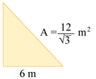

1.
Escribe verdadero V o falso F según
corresponda.
2.
Marca con una X a qué racionalización pertenece cada fracción.
3.
Escribe el factor racionalizante de cada expresión.
4.
Racionaliza para encontrar la fracción equivalente.
5.
Reduce tanto como sea posible.
6.
Racionaliza y calcula las operaciones.
7.
Realiza la siguiente rutina de pensamiento.

8.
Samuel está calculando la altura de un triángulo en función de su base. Si la base es de 6 m y el área se
expresa como . ¿cúal es la altura?

9.
El área de un cuadrado es de 144 m². ¿Cúanto medirá el perímetro de otro cuadrado cuyo lado es la raíz
cuadrada del lado del primero?
10.
Para determinar la dosis de un paciente, los médicos calculan su área de superficie corporal (BS). Se
utiliza la fórmula: , donde w es la masa en libras, h es la
altura en centímetros. Determina el peso en libras de un paciente que tiene una altura de 180 cm y un BSA
de z1 √10cm².
w = libras